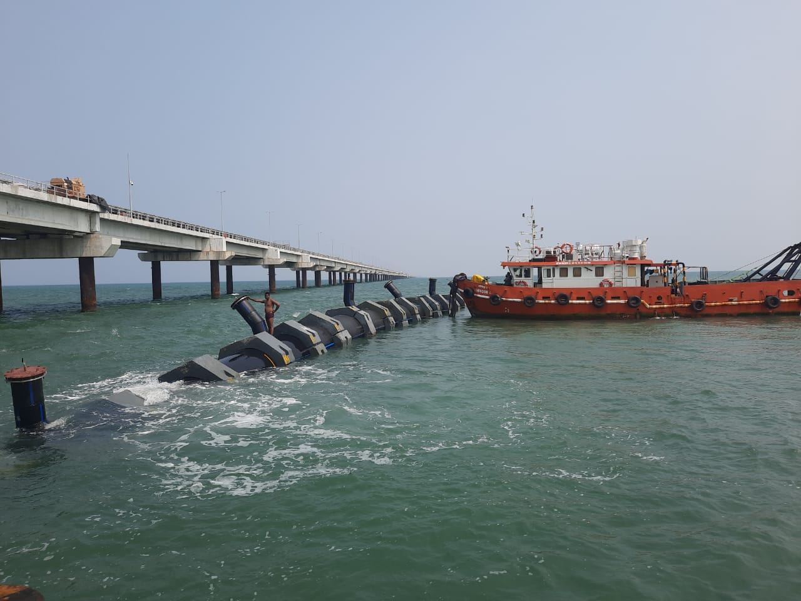
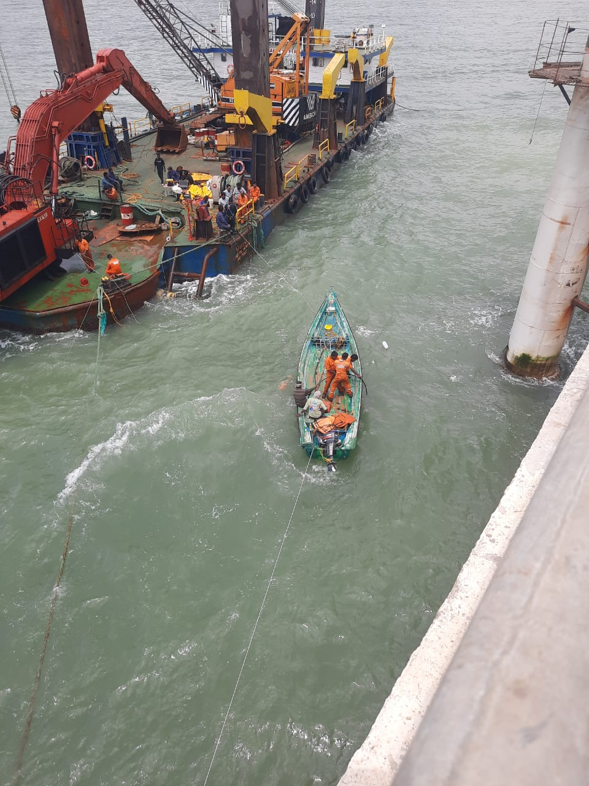
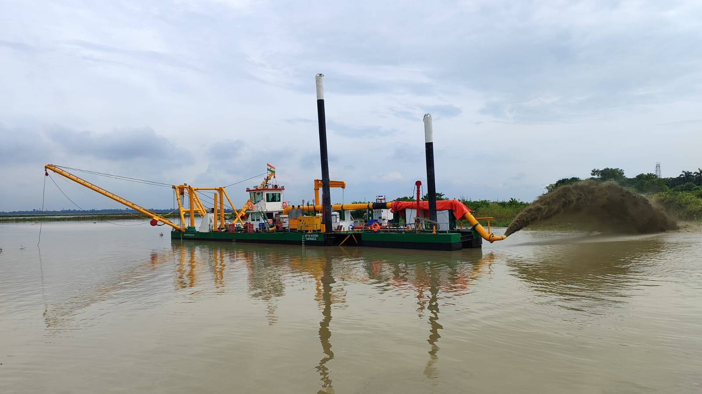
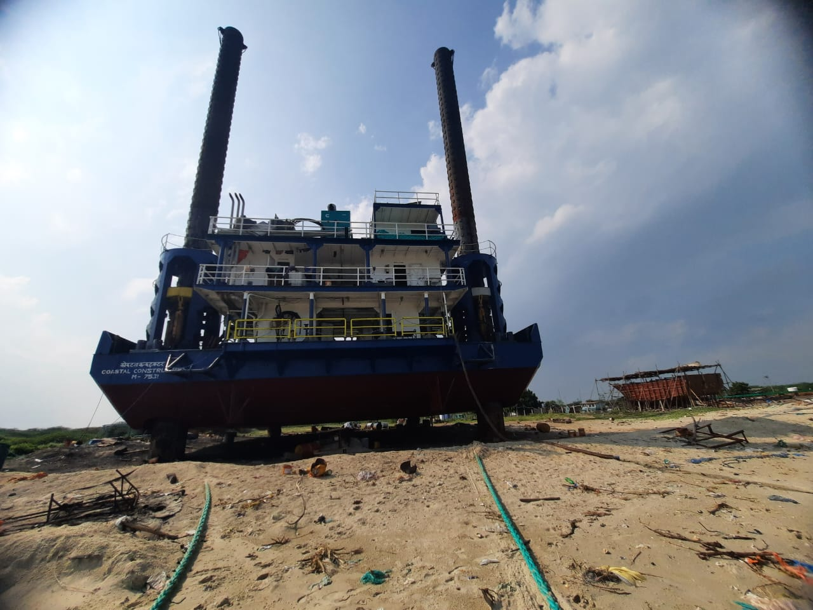
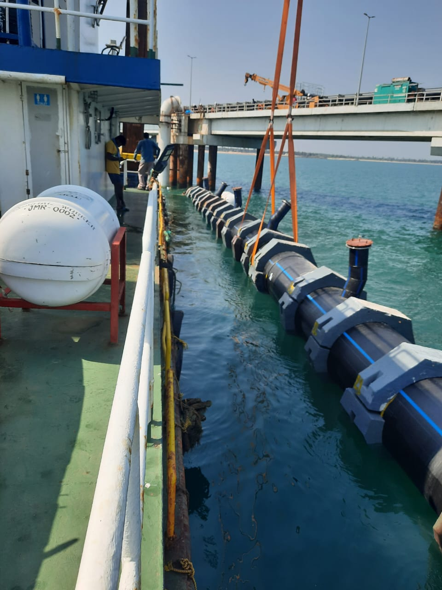
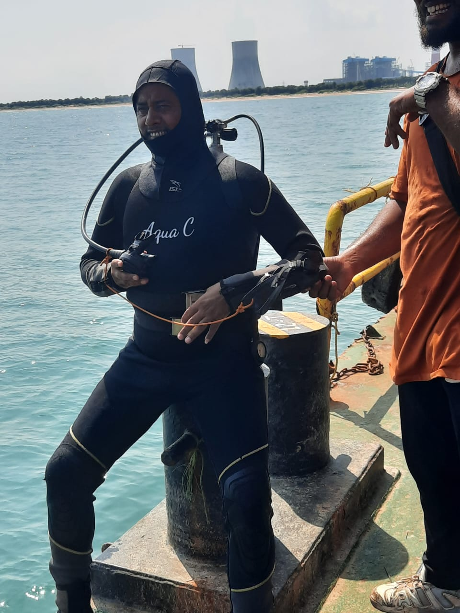

Engineering, Procurement, Construction, and Commissioning
End-to-End Solutions for Marine Construction
Ingenious Marine EPCC Division is at the forefront of specialized marine construction services, delivering complete, turnkey solutions across a diverse project portfolio. From Seawater Intake & Outfall Systems, Submarine Pipe & Cable lay to complex Marine Construction, we handle every phase—from engineering and procurement to construction and commissioning—with precision and reliability.
With deep expertise in Offshore Foundation Engineering and the fast-growing Marine Renewable Energy sector, our EPCC Division is dedicated to providing safe, cost-effective solutions for offshore installations worldwide. Guided by rigorous standards and innovative methodologies, we bring each project to fruition with a focus on efficiency, safety, and environmental responsibility.
Construction of Fisheries Harbour
End-to-End Solutions for Marine Construction
Ingenious Marine specializes in the construction of fisheries harbours, delivering fully integrated infrastructure that supports sustainable fishing operations and coastal development. From breakwaters, jetties, and berthing facilities to landing platforms, auction halls, and utility systems, we provide end-to-end solutions tailored to local marine conditions and community needs.
Our approach combines advanced marine engineering, environmental stewardship, and efficient project execution to build harbours that are durable, functional, and future-ready. With a strong focus on safety, quality, and stakeholder collaboration, Ingenious Marine ensures that each fisheries harbour serves as a vital hub for maritime livelihood and regional growth.
Marine and land Dredging
End-to-End Solutions for Marine Construction
Ingenious Marine offers expert dredging services to support port development, channel deepening, and seabed preparation for marine infrastructure. Our fleet and equipment are optimized for precise, large-scale sediment removal in coastal and offshore environments, ensuring navigability and environmental compliance.
Whether for new construction, maintenance, or reclamation, our dredging solutions are delivered with a focus on performance, sustainability, and minimizing ecological impact. Each operation is guided by hydrographic surveys, advanced dredging technologies, and strict safety protocols.
Experts of Equipments and Barges
End-to-End Solutions for Marine Construction
Our EPCC Division provides dry docking solutions for barges and all types of marine equipment, enabling inspection, repair, and maintenance in controlled environments. We manage the entire dry docking cycle—planning, docking, servicing, and re-commissioning—with a strong emphasis on quality, safety, and minimal downtime.
Whether it's hull maintenance, propulsion system overhaul, or structural repairs, Ingenious Marine ensures optimal vessel performance through professional marine servicing solutions.
Pipelines Experts
End-to-End Solutions for Marine Construction
Ingenious Marine is highly experienced in the laying of HDPE pipelines for marine and coastal applications, including seawater intake, outfall, and industrial discharge systems. We offer turnkey pipeline services—from design and fusion welding to offshore towing and installation.
Utilizing advanced float-and-sink methods, trenching, and anchoring techniques, we ensure long-lasting pipeline integrity under dynamic marine conditions, while meeting stringent environmental and operational standards.

Construction and Installation of Intake and Outfall Pipelines
End-to-End Solutions for Marine Construction
We provide end-to-end solutions for the construction and installation of seawater intake and outfall pipelines, essential for power plants, desalination units, and coastal industries. Our expertise covers marine trenching, pipeline alignment, diffusers, and structural supports.
Ingenious Marine ensures each system is engineered for maximum efficiency and environmental compliance, using robust materials and methodologies tailored to site-specific marine dynamics and operational needs.
All kinds of diving and salvaging Activites
End-to-End Solutions for Marine Construction
Ingenious Marine delivers specialized salvaging and commercial diving services for offshore structures, vessels, and underwater infrastructure. Our certified diving teams conduct a wide range of operations, from marine inspections, repairs, and welding to emergency recovery and salvage operations.
Operating under stringent safety and environmental guidelines, we deploy advanced diving equipment and ROV support to ensure precision and efficiency in even the most challenging underwater environments.
© 2025 Indegenious Marine. All Rights Reserved